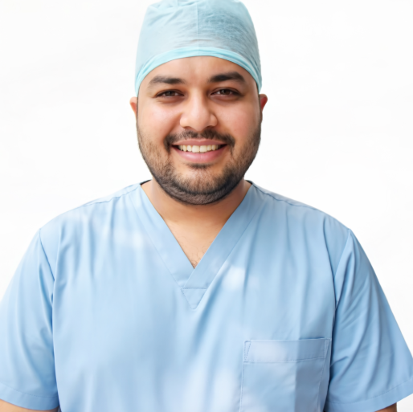

The Team Scalpel
The Team Scalpel

With over two decades of dedicated surgical excellence, Dr. Alok Agarwal is recognized across Baraut, UP and the NCR for his pioneering work in minimally invasive techniques and advanced laser procedures.
His philosophy centers around "Precision paired with profound compassion." Dr. Agarwal believes that while technology (like advanced lasers) is crucial for optimal physical outcomes, understanding the patient's individual emotional and medical needs—and navigating the local healthcare logistics smoothly—is the true hallmark of excellent healthcare.
Leading surgical interventions at our state-of-the-art facility in Baraut Medicity Hospital, maintaining a 99% success rate in minimally invasive outpatient procedures.
Served prominently in top metropolitan corporate hospitals, managing critical trauma, oncological surgeries, and highly complex gastrointestinal reconstructions.
Completed rigorous postgraduate surgical training with academic distinction from a premier medical institute in India.
Take the first step towards recovery under world-class supervision.
Request a ConsultationBeyond our clinical walls, Dr. Alok Agarwal is deeply committed to supporting surgical initiatives for the underprivileged. We believe that financial constraints should never be a barrier to life-saving medical care.
Your support goes directly toward funding minimally invasive procedures for patients in need within the Baraut and NCR regions. Every contribution helps us expand our outreach and bring premium surgical standards to all.
Compatible with PhonePe, GPay & BHIM